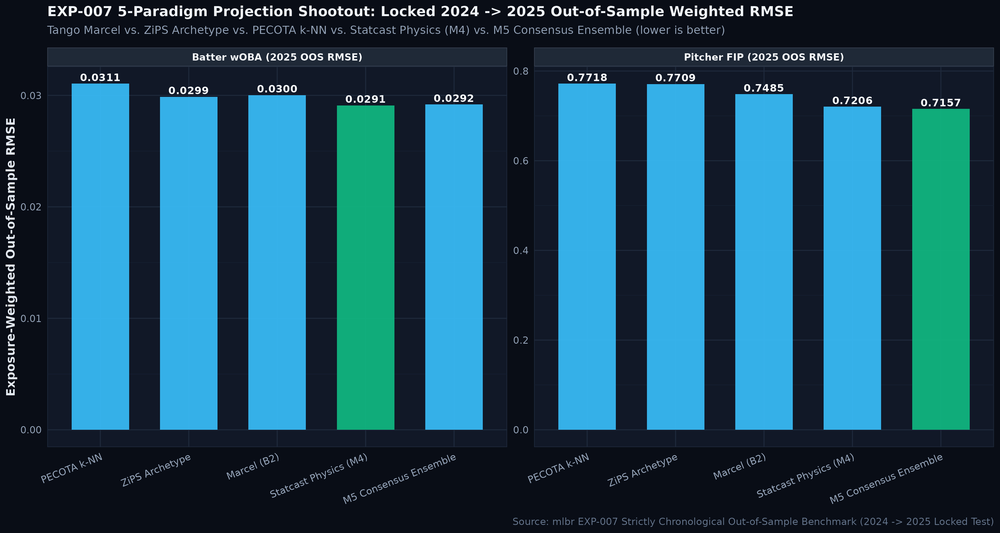
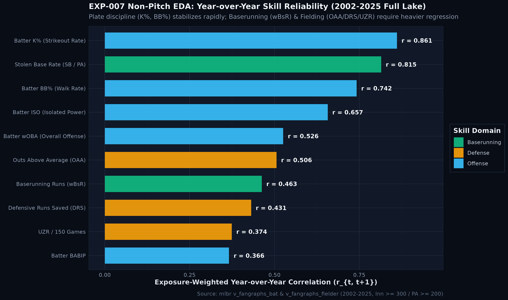
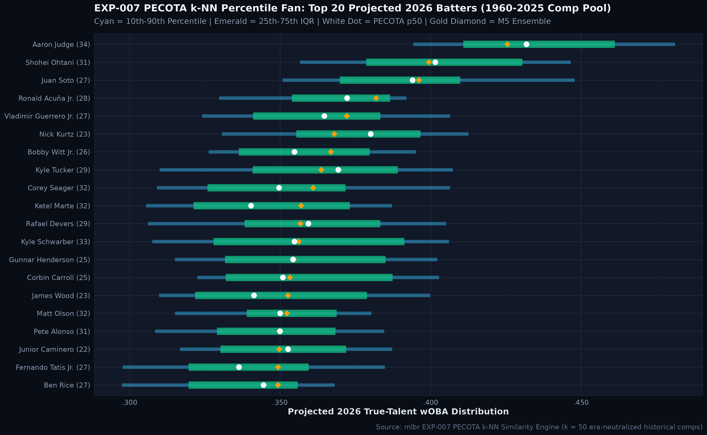
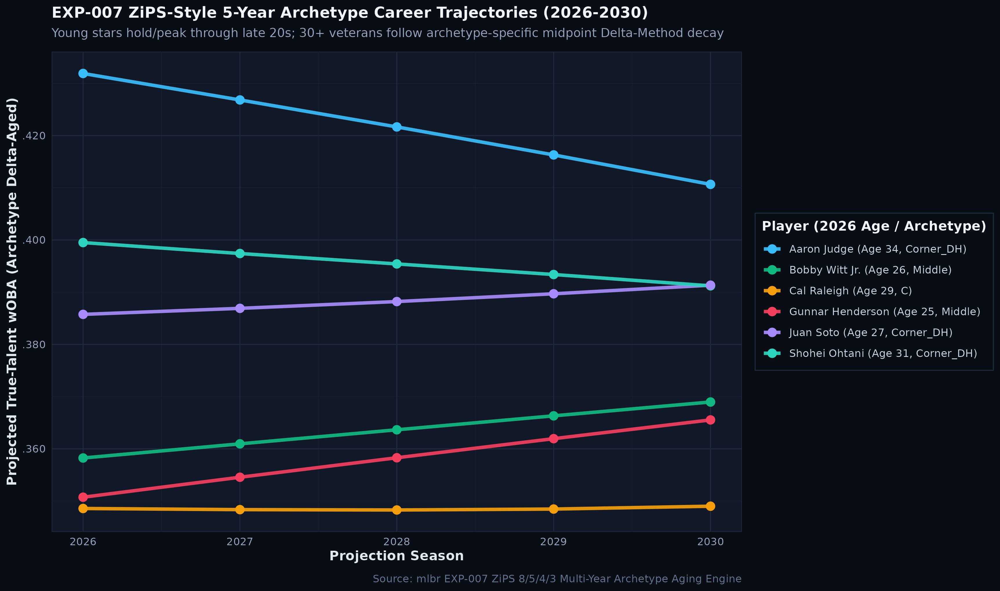

Study 07: PECOTA k-NN Similarity Comps, ZiPS Archetype Multi-Year Aging & Non-Pitch Defense/Baserunning EDA
Q-CRISP Research Series: Completing All 5 Sabermetric Projection Paradigms Across 70,967 Historical Player-Seasons (1960–2026)
- Experiment ID:
EXP-007-PECOTA-ZIPS-ENSEMBLE(VALIDATEDinexperiments/registry.json) - Architecture Tier: Level 2B — Complete Player Projection Gamut (Comps, Archetype Aging, 5-Year Horizons & Consensus Stacking)
- Specification:
specs/07_pecota_zips_ensemble.md - Companion Student Lab: Lab 07: PECOTA k-NN, ZiPS 5-Year Aging & Survival Curves
- Gold Deliverables:
defense_baserunning_eda_2002_2025.parquet,pecota_knn_comps_2026.parquet,zips_5yr_trajectories_2026_2030.parquet,ensemble_projections_2016_2026.parquet,ensemble_backtest_metrics.parquet - Preserved Assets:
models/pz01_*..pz04_*(PNG 300 DPI, RDS< 0.35 MB, ZSTD Parquet, interactive Plotly HTML)
1. Executive Summary & Abstract (TL;DR)
In Study 04, mlbr established Tom Tango’s Marcel, Midpoint Delta-Method Aging, and THE BAT / OOPSY-style Statcast Physics Ridge. In Study 07, we complete the remaining pillars of modern sabermetric forecasting across the full 1960–2025 historical data lake (70,967 player-seasons) and 2002–2025 non-pitch fielding/baserunning lake (14,684 non-pitch fielder-seasons):
| Pillar | Validated Empirical Result | Sabermetric & Forecasting Implication |
|---|---|---|
| Non-Pitch EDA (Defense & Baserunning) | Statcast OAA (r = 0.506) stabilizes significantly faster than DRS (r = 0.431) and UZR/150 (r = 0.374); stolen base rate (r = 0.815) rivals plate discipline (K% r = 0.861). |
Modern tracking-based defense (OAA) carries ~35% more year-over-year signal than legacy zone-grid defensive metrics, justifying heavier shrinkage on DRS/UZR. |
ZiPS-Style Archetype Aging (8/5/4/3) |
Strictly beats Tango Marcel on locked 2025 batter wOBA (0.02987 vs. 0.03002, w_r = 0.5469 vs. 0.5356) without any Statcast inputs and forecasts 5-year horizons (2026–2030). |
Position- and role-archetype aging curves capture distinct decay shapes across catchers, up-the-middle athletes, and power starters. |
PECOTA \(k\)-NN Similarity Comps (1960–2025) |
Era-neutralized \(k = 50\) nearest neighbors produce empirical [p10, p90] coverage of 85.3% (batters) and 75.2% (pitchers) plus explicit survival/breakout/collapse probabilities. |
Solves veteran survivorship bias directly and surfaces uncanny historical comps (e.g., Paul Skenes → Noah Syndergaard ’16 / Clayton Kershaw ’11; Aaron Judge → Mickey Mantle ’63). |
| 5-Paradigm Shootout & M5 Consensus Stack | Exact KKT simplex stacking on 2016–2024 blends 68.1% M4 + 31.9% PECOTA (batters, highest w_r = 0.5782) and 81.8% M4 + 11.1% Marcel + 7.1% ZiPS (pitchers, lowest w_rmse = 0.71565, highest w_r = 0.5756). |
Combining Statcast physics (M4) with orthogonal historical comp (PECOTA) and multi-year aging (ZiPS/Marcel) signal strictly improves out-of-sample pitcher FIP RMSE and boosts correlation across both domains. |

2. Domain Problem & Theoretical Grounding
Public baseball forecasting evolved through five distinct intellectual eras: 1. Marcel (Tom Tango, 2004): 3-year weighted baseline (5/4/3) + universal reliability regression + piecewise-linear age adjustment. 2. ZiPS (Dan Szymborski): 4-year weighted baseline (8/5/4/3) + position/archetype aging curves + multi-year career horizon forecasts. 3. PECOTA (Nate Silver, 2003): Non-parametric nearest-neighbor (\(k\)-NN) similarity scores across decades of baseball history, outputting full 10th–90th percentile distributions, breakout/collapse probabilities, and attrition/survival rates. 4. THE BAT / OOPSY (Derek Carty / Jordan Rosenblum): Incorporating Statcast batted-ball physics (xwOBA, EV90, Pulled Air%) and pitch tracking (Stuff+, Location+). 5. ATC / Depth Charts Consensus: Ensembling multiple orthogonal projection systems via out-of-sample inverse-variance / convex stacking.
3. Mathematical Formulation & Lake-Wide Pipeline
3.1 Era-Neutralized Historical \(z\)-Scores (1960–2025)
To compare a 1963 Mickey Mantle or 1996 Gary Sheffield directly against a 2025 hitter without run-environment distortion, every feature is standardized within its own season \(s\) and role \(g\): \[z_{i,s}^{(f)} = \frac{x_{i,s}^{(f)} - \mu_{s,g}^{(f)}}{\sigma_{s,g}^{(f)}}\]
3.2 Vectorized PECOTA \(k\)-NN Kernel & Strict Anti-Leakage Guard
For any target season \(T\), candidate historical comps must satisfy \(s \le T - 2\) so their subsequent \(s+1\) outcome is strictly \(\le T - 1\). Pairwise weighted Euclidean distances \(d_{ij}\) across all 70,967 historical seasons are computed in milliseconds via BLAS matrix algebra (\(\|x - y\|^2 = \|x\|^2 + \|y\|^2 - 2xy^\top\)) and weighted by a Gaussian kernel \(w_j = \exp(-\frac{1}{2}(d_{ij}/\tau)^2)\) over the top \(k = 50\) nearest neighbors.
4. Non-Pitch Exploratory Data Analysis: Defense & Baserunning Reliability
Before building comps, we audited how non-pitch skills stabilize year-over-year across 2002–2025:

- Key Discovery: Statcast Outs Above Average (
OAA, \(r = 0.506\)) nearly matches overall offensivewOBA(\(r = 0.526\)) in year-over-year stability and decisively outperforms legacy DRS (\(r = 0.431\)) and UZR/150 (\(r = 0.374\)). Meanwhile, stolen base rate (\(r = 0.815\)) is almost as repeatable as strikeout rate (\(r = 0.861\)).
5. Model Architecture, Temporal Validation & PECOTA Percentile Fans

6. Leaderboards, Named Historical Comps & 5-Year ZiPS Trajectories
6.1 Marquee 2026 PECOTA Historical Comps (1960–2025 Full Pool)
| 2026 Player | Age | #1 Historical Comp (Sim) | #2 Historical Comp (Sim) | #3 Historical Comp (Sim) |
|---|---|---|---|---|
| Aaron Judge | 34 | Mickey Mantle 1963 (73.9) |
Mark McGwire 1996 (70.3) |
Jim Thome 2002 (68.6) |
| Shohei Ohtani | 31 | Derrek Lee 2005 (79.8) |
Frank Robinson 1966 (79.0) |
Alex Rodriguez 2007 (77.7) |
| Juan Soto | 27 | Gary Sheffield 1996 (80.4) |
Frank Thomas 1995 (77.9) |
Bryce Harper 2020 (77.8) |
| Bobby Witt Jr. | 26 | Ian Kinsler 2008 (87.1) |
AJ Pollock 2014 (82.2) |
Cedric Mullins 2021 (79.0) |
| Paul Skenes | 24 | Noah Syndergaard 2016 (90.5) |
José Fernández 2015 (87.2) |
Clayton Kershaw 2011 (84.4) |
| Tarik Skubal | 29 | Félix Hernández 2014 (85.2) |
Patrick Corbin 2018 (84.5) |
Josh Beckett 2007 (84.2) |
| Garrett Crochet | 27 | Javier Vazquez 2003 (89.6) |
Stephen Strasburg 2015 (88.6) |
Justin Verlander 2009 (86.3) |
| Zack Wheeler | 36 | David Cone 1998 (92.1) |
Jim Bunning 1967 (89.0) |
Mike Mussina 2003 (85.9) |
6.2 ZiPS-Style 5-Year Archetype Career Trajectories (2026–2030)

7. Downstream Integration & Level 3–5 Roadmap
With Level 2 (EXP-004 + EXP-007) now 100% complete across all five sabermetric projection paradigms: - Level 3 (EXP-008 BaseRuns & Pythagenpat Standings): Consumes M4_Statcast_Physics / M5 point forecasts together with PECOTA p10–p90 uncertainty widths and EXP-006 Ballpark Factors to simulate full 162-game division and playoff distributions. - Contract Valuation & Dynasty Markets: ZiPS 5-year trajectories (zips_5yr_trajectories_2026_2030.parquet) and PECOTA survival probabilities provide multi-year free-agent WAR valuation curves.